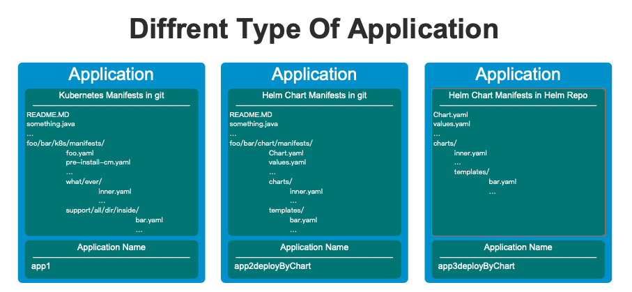
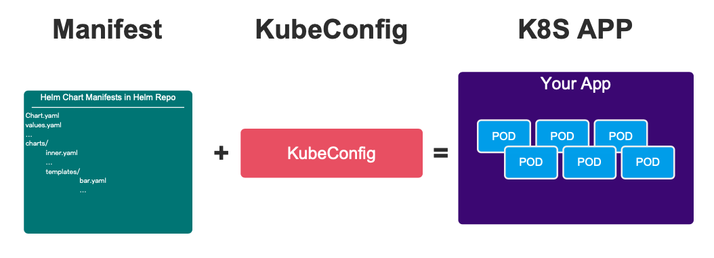
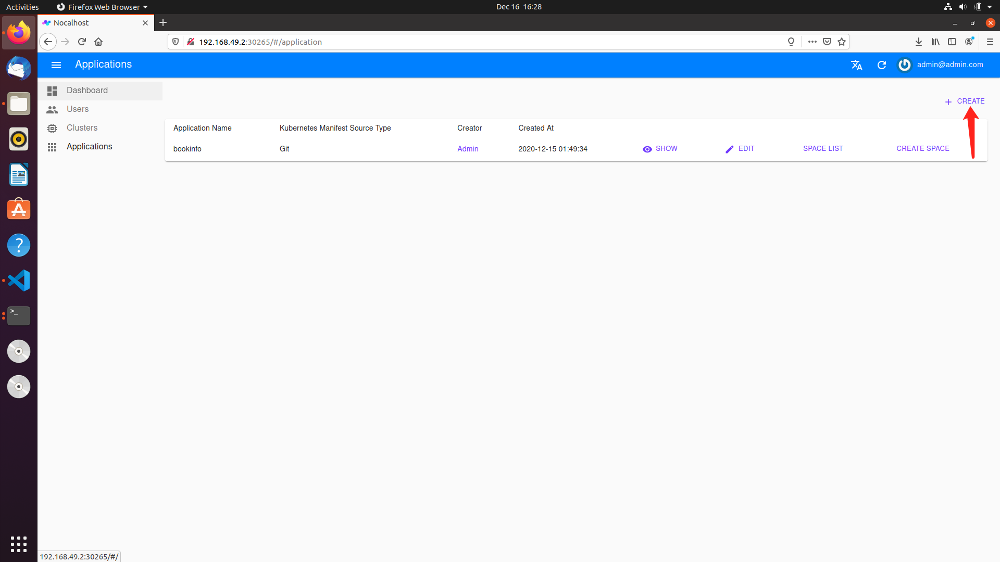

Application
什么是 Application
Application 是 Nocalhost 的一个概念，它主要用于管理你想用于本地开发的一组 manifest 文件，同时支持 k8s manifest 和 helm chart。也就是说，这些 manifest 通常包含你的应用所依赖的所有 k8s 资源，如果可能，我们应该尽量保持它的最小化。

Application 支持放置在 git 的 k8s manifest，放置在 git 的 helm chart 和直接放置在 Helm Repo 几种方式。

Application 是做什么的
Application 可以用于创建 Space，我们推荐使用插件来直接使用并部署你的应用，插件正是基于 Space 进行应用部署的。也就是说，当你拥有一个 Space，就可以愉快的在拥有插件的 IDE 上开始你的开发了。
不用担心，你可以暂时不需要理解 Space 是什么。回想一下，我们通常使用 kubeconfig + manifest 文件来启动我们应用的，这样就很好理解 Application 和 Space 的关系了。

Application 也是这样被使用的，Space 其实可以近似看作 Application + kubeconfig：

Application 与 Manifest
对于 Helm Manifest 的支持
nocalhost 支持使用 helm，无需对 chart 做任何改造.
1. 如果你已经拥有并且正在使用 Helm Chart：
helm install helloworld /chart/dir/ \
-n fooNamespace \
--kubeconfig ~/.kube/barconfig
只需要花费一点时间，将你的 Helm Chart 放置在任意一个你有权限访问 git 仓库即可，我们会使用 git clone 命令来获取最新的 Application 信息，例如：
https://[gihub, Gitlab, etc... whateverRepo]/foo/bar/hellowrold.git
Somefile.py
AClass.java
README.MD
...
mychart/dir/
Chart.yaml
values.yaml
charts/
templates/
...
对于这个仓库来说，我们将 Helm chart 放置在了 相对于根目录 的 mychart/dir/ 文件下，那么我们可以使用如下命令来进行体验：
nhctl install helloworld \
-u https://[gihub, Gitlab, etc... whateverRepo]/foo/bar/hellowrold.git \
-t helmGit \
-n k8sFooNamespace \
--resource-path charts/bookinfo \
--kubeconfig ~/.kube/barconfig
2. 如果拥有自己的 Helm Repo：
helm install helloworld \
mychart \
-- repo http://mychart/charts/ \
-n fooNamespace \
--kubeconfig ~/.kube/barconfig
你可以使用如下命令来达到同样的效果：
nhctl install helloworld \
--helm-chart-name mychart \
--helm-repo-url http://mychart/charts/ \
-n fooNamespace \
--kubeconfig ~/.kube/barconfig
对于 Kubernetes Manifest 的支持
nocalhost 也可以无缝支持 Kubernetes Manifest，同样无需你对配置做任何改造，不过我们需要你将其上传到任意一个 git 仓库：
假设你有这样的一个仓库，它的地址为 https://[gihub, Gitlab, etc... whateverRepo]/foo/bar/hellowrold.git，里面存放着许多 Kubernetes Manifest ：
README.MD
something.java
…
foo/bar/k8s/manifests/
foo.yaml
pre-install-cm.yaml
…
what/ever/
inner.yaml
…
support/all/dir/inside/
bar.yaml
…
你只想应用相对根目录 what/ever/ 与 support/all/dir/inside/ 下的文件，那么使用命令：
nhctl install applicationNameFooBar \
-u https://[gihub, Gitlab, etc... whateverRepo]/foo/bar/hellowrold.git \
-t manifest \
-n k8sFooNamespace \
--resource-path what/ever/ \
--resource-path support/all/dir/inside/ \
--kubeconfig ~/.kube/barconfig
如果你想应用所有文件，则可以使用命令：
nhctl install applicationNameFooBar \
-u https://[gihub, Gitlab, etc... whateverRepo]/foo/bar/hellowrold.git \
-t manifest \
-n k8sFooNamespace \
--resource-path . \
--kubeconfig ~/.kube/barconfig
Nocalhost 对原生 Application 的增强
Nocalhost 并不直接对用户的配置进行侵入，如果你需要使用一些增强功能，例如 Pre-Install、例如依赖管理等。在你的仓库下新增 .nocalhost/ 文件夹，并新增 config.yaml 或 config.yaml.helm（针对 helm 类型的 git 仓库）。
Pre-Install
我们允许用户在真正 install 应用之前，进行一些额外的操作。以 bookinfo 为例，在进行应用的 Install 之前，我们会对这几个配置的 yaml 文件进行 apply，
onPreInstall:
- path: manifest/templates/pre-install/print-num-job-01.yaml
weight: "1"
- path: manifest/templates/pre-install/print-num-job-02.yaml
weight: "-5"
依赖管理
例如以下这个配置，代表 reviews 这个 deployment，需要等待 productpage 的 pod 可用才会进行部署。
services:
- name: reviews
serviceType: deployment
gitUrl: https://github.com/nocalhost/bookinfo-reviews.git
devContainerImage: codingcorp-docker.pkg.coding.net/nocalhost/dev-images/java:latest
workDir: /home/nocalhost-dev
syncDirs:
- ./
dependPodsLabelSelector:
- "productpage"
开发镜像配置
上述配置中，devContainerImage: codingcorp-docker.pkg.coding.net/nocalhost/dev-images/java:latest，代表你在进入开发模式时，使用此镜像作为容器，替代原镜像进行开发。
更多
如果你想了解 .nocalhost/ 的更多配置信息，点击：TODO。
Application 的最佳实践
通常，我们推荐使用 Nocalhost-Server + Nocalhost-Plug-In 来获得最佳实践，我们反复在强调这一点。通常，我们并不推荐直接使用 nhctl 来直接进行应用的部署、开发等。虽然上面的很多示例都直接使用 nhctl 来说明。
用上面这个例子为例，直接进入 Nocalhost-Web 来进行创建。进入主页后，切换到 Applications 这一栏，点击右上角进行创建：

支持前面分别提到的三种形式，这里以 kubernetes manifest 为例：

Advance
这里会说明一些 Application 一些额外的特性或者设计，这并不是必须的，但会有助于你更好的使用 Nocalhost。
Application Name
nocalhost 使用唯一的 Application Name 来区分不同的 Application。注意，即使你使用不同的 Nocalhost-Server（例如你部署了两套以上的 Nocalhost-Server），我们也不支持相同的 Application Name 在同一个开发机器上使用。
Nocalhost-Server 中的 Application 与 ~/.nh 下的 Application
注意，如果你细心的话，你会发现不止是在 Nocalhost-Server 中，我们同样存储了 Application 的信息在本地 ~/.nh 文件夹，这两者可以简单理解为毫无关联。也可以理解为本地是进行 install 操作时的一个手动指定或从 Nocalhost-Server 中获取的一个副本快照。Application 运行的状态 (也就是是否处于 install) 是**由本地进行管理和存储的**。Nocalhost-Server 仅存储 Application 的元信息。